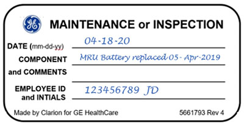

- 00000018WIA30FDC630GYZ
- id_20116835.10
- Jul 28, 2025 5:46:13 PM
Doing an MRU quarterly service check
Do a check of the functionality and operation of the Magnet Rundown Unit (MRU).
Prerequisites
| Personnel requirements | |||
|---|---|---|---|
| Required persons | Preliminary requirements | Procedure | Finalization |
| 1 | - | 5 minutes | - |
| Safety | ||||
|---|---|---|---|---|
|
Before working in any GE HealthCare MR suite or doing any GE HealthCare service procedure, you must:
If you have any safety concerns at any time, do not begin work or immediately stop work and move to a safe location. Immediately contact your supervisor or site safety officer for instructions on how to proceed. | ||||
| ||||
Note If you are doing this procedure as part of any corrective service repairs outside a PM visit, use the ePM Form with Equipment Operation Check (EOC) option and submit it to the back office.
| Type | Model number | Service manual | Quarterly test | Battery replacement schedule |
|---|---|---|---|---|
| Type I | 5196918 or 5196918-2 | 5265188 | Complete the quarterly service test. See MRU Type I. | 3 year |
| Type II | 46-294231G1 | 46-318393 | Complete the quarterly service test. See MRU Type II. | 3 year |
| Type III |
46-252138G4 46-252138G3 46-252138G2 | 46-294439 | Complete the quarterly service test. See MRU Type III. | 3 year |
| Type IV | 2295525-8 | 5717641 | Complete the quarterly service test. See MRU Type IV. | 3 year |
About this task
Note (For all MRU/ERU procedures) The following steps must be completed if no label is found when doing a PM.
Procedure
- Determine the date for the MRU battery. This date can be derived from the installation of the system, manufacturing date of the unit, or dispatch history.
- Get the GE Equipment Maintenance or Inspection (5661793) sticker and complete all entries on the sticker including your name, employee ID, and today's date. Put the sticker on the MRU where it is easy to see.
- For devices where the date is unknown or where there are concerns about the accuracy of the date, do the following when you replace the part:
- Get the GE Equipment Maintenance or Inspection sticker and complete all entries on the sticker including your name, employee ID and use today's date.
- Put the sticker on the MRU where it is visible.
Figure 1. GE Equipment Maintenance or Inspection sticker 